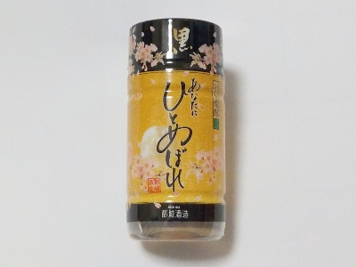
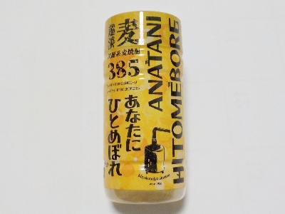
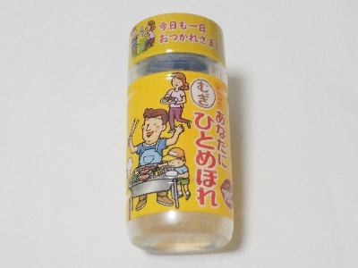

都城酒造のあなたにひとめぼれ（いも焼酎）はクリアな味。
更新日 : 2026/02/20

「あなたにひとめぼれ」だからかコーンスターチが入っています。すっきりしていて飲みやすかったです。
麦だとアルコールが25度ですが、この芋はアルコール度数が20%でちょっと低いです。きっと麦よりさつまいもの方がコストが高いんでしょうね。
おせんべいと一緒に美味しく飲みました。
140円で購入しました。
宮崎県都城市乙房町2887番地1
更新日 : 2026/02/20

「あなたにひとめぼれ」だからかコーンスターチが入っています。すっきりしていて飲みやすかったです。
麦だとアルコールが25度ですが、この芋はアルコール度数が20%でちょっと低いです。きっと麦よりさつまいもの方がコストが高いんでしょうね。
おせんべいと一緒に美味しく飲みました。
140円で購入しました。
更新日 : 2025/12/06

あなたにひとめぼれのパッケージ違いかと思ったら、商品が違っていました。これは淡麗だそうです。
そう言われれば淡麗な味だなと思いました。アルコール感が強かったです。
パッケージに「３８５」と数字がありますが、社名の「ミヤコ」だそうです。
162円で購入しました。値段が安いのはコーンスターチのおかげみたい。
更新日 : 2025/11/29

お買い求めやすい価格の麦焼酎です。アルコール25度で容量180mlです。
毎日飲むんだったらこれでいい気がするな。
値段って大事ですよね。
2025/11/20 税込み140円で購入。少し飲んで、空いたところに柚子のタネを入れて化粧水を作ります。